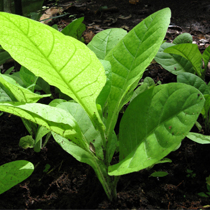
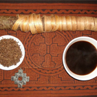
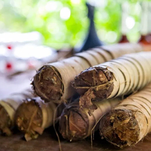

Vegetalismo - традиция перуанских целителей Верхней Амазонки.
Космология Vegetalismo объединяет местные верования с католическими влияниями. Хотя многие вегеталисты могут объявить себя католиками, они скажут, что получают свои знания и силу для исцеления непосредственно от духов тропического леса.
Согласно космологии Vegetalista, в их целительской работе им помогают три типа сущностей:
гении или «матери» целительных растений (которые могут появляться в форме человека или животных),
защитные сущности или аркана (которые часто выглядят как могущественные животные, птицы или люди),
другие посещающие сущности, которые появляются из других измерений, секретных частей Земли и космоса.
В отличие от местных курандеро (таких как шипибо-конибо), которые традиционно использовали свои дальновидные знания для уравновешивания социального порядка в своих сельских общинах, – шаманизм ориентирован на индивидуальное исцеление, приспосабливаясь к синкретизму предков Пути жизни (слиянию «несопоставимых» образов мышления и взглядов, образующих условное единство).
Хотя вегеталисты находятся под влиянием коренных амазонских космологий, они не принадлежат какой-либо конкретной этнической группе или культурной практике.
Vegetalismo - это уникальное призвание, преданное к исцелению и изучению скрытой мудрости природы. Ниже приведены некоторые инструменты и практики вегеталиста.
Диета (Dietas)
Вегелисты изучают знания о растительном духе с помощью растительных диет с растениями-учителями (Master Plants).
Чтобы доминировать над растениями или овладеть ими, вегеталист должен очистить своё тело и доказать растениям, что он или она достойны их доверия.
Чтобы сделать это, вегеталисты должны выдерживать строгие диетические ограничения, должны воздерживаться от любых контактов с противоположным полом, должны ограничить себя строгой пищевой диетой, и должны взять на себя обязательство изолировать себя на срок до шести месяцев в диких джунглях.
Сосредоточенная работа с растением включает «причащение» к этому растению: поглощение сущности растения в виде чая, настойки или дыма в течение определенного периода времени.
Когда гениальное растение решает раскрыть свои секреты, оно может сделать это посредством снов, видений, или в форме рождения целительных песен, известных как икарос.
Икаро - это песня, которую поет вегеталист или местный курандеро во время церемоний исцеления.
Считается, что слово икаро происходит от кечуа «икарай», что означает «курить, чтобы исцелить».
Икарос - это система устного / музыкального общения между вегеталистом и растениями, а также вегеталистом и участниками церемонии.
Мощный и часто преследующий звук икаро может влиять на видения в церемониях, либо усиливать их, либо полностью изгонять. Умелое владение икаро может вызвать дух умершего, изгнать злых существ, исцелить и защитить тело.
Опытный курандеро может читать сотни икаро, которые можно насвистывать или петь, и выражать на любом языке.
Вегеталисты или местные курандеро (целители) обычно поют на диалекте, который является смесью их родного языка (то есть кечуа, шипибо-конибо, ашанинка). Считается, что у каждого живого существа есть своя песня или икаро, и что икаро можно научиться.
Пение икаро иногда сопровождается чакапой, погремушкой в связке листьев или маракой, которая используется для поддержания ритма церемонии. Вегеталисты будут использовать свою чакапу или мараку, чтобы направлять темные или нежелательные энергии.
Айме поёт Икаро – Жена и партнер маэстро Сантьяго Энрике Мелендес Паредес
Подготовка baño de florecimiento (цветочной ванны) является жизненно важной лечебной практикой в перуанском вегетализме, которая использует цветочные эссенции для привлечения и очищения.
Часто используемые в координации с церемонией аяваски, цветочные ванны являются мощным целебным волшебством. Заряженные намерением курандеро, они могут изменить состояние социального человека, в отношении любви и эмпатии к окружающим людям. Часто это имеет удивительно быстрые и неожиданные результаты!
Подготовка включает погружение собранных растений джунглей в большой бассейн с водой: корень пири-пири, mocura, ajo sacha (дикий чеснок), ruda (календула) и romero (розмарин). Некоторые из растений можно использовать в зависимости от потребностей и желаний человека.
Ванны принимаются, как правило, на закате и восходе солнца. Шесть ложек воды ритуально выливаются на голову лицом к солнцу, а затем еще шесть - на луну. Самые мощные ванны принимают возле реки, чтобы высвободившаяся негативная энергия могла быть унесена энергичным напором воды.



Табак Мапачо (Mapacho Tobacco)
Известный как «пища растительных духов», темный и горький табак используется вегеталистом во время церемоний исцеления, чтобы отогнать плохие энергии или сосредоточить энергию намерения в
исцелении.
На церемонии аяваски, вегеталист часто выдувает свое дымное намерение (соплар) в заварку аяваски или человеку, который пришел исцелиться. На определённом этапе церемонии, участникам также будет предложено курить табак, чтобы помочь очистить их энергию и энергию вокруг.
Чары и заклинания (Encantos)
В целительной работе вегеталистов часто используются специальные камни, кристаллы и окаменелости.
Заряженные на церемонии предметы исцеления используются для перемещения и извлечения нежелательных отрицательных энергий или сущностей, и в некоторых церемониях часто помещаются непосредственно на тело.